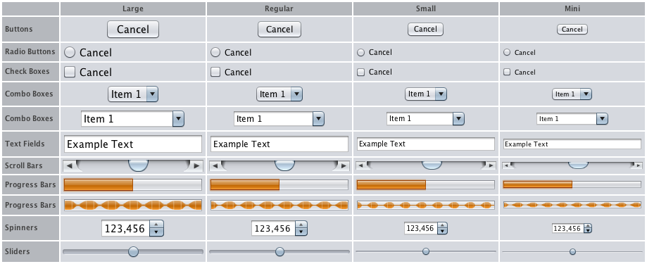

¿Alguna vez necesitó una versión más pequeña de un componente para colocarla en una paleta de herramientas o barra de herramientas, o en la barra de estado? Puede redimensionar un componente estableciendo una propiedad cliente en el componente. Tres tamaños se soportan además del tamaño "regular": mini, pequeño, y grande. La siguiente captura de pantalla, tomada de Laffy, muestra los cuatro tamaños lado a lado.

El único componente que no admite la propiedad de variantes de tamaño es JLabel. Sin embargo,
puede cambiar el tamaño de una etiqueta cambiando el tamaño de su fuente.
Otras implementaciones de aspecto, tales como Aqua de Apple, podrían también respetar las variantes de tamaño de la propiedad cliente. Nimbus es actualmente el único aspecto de Sun que soporta variantes de tamaño.
Puede establecer el tamaño de un componente con una línea de código, antes de que el componente sea visualizado. El siguiente trozo de código muestra cómo usar cada tamaño:
// mini
myButton.putClientProperty("JComponent.sizeVariant", "mini");
// pequeño
mySlider.putClientProperty("JComponent.sizeVariant", "small");
// grande
myTextField.putClientProperty("JComponent.sizeVariant", "large");
Si ha establecido la propiedad de variantes de tamaño correctamente pero los componetes se muestran en su
tamaño "regular", podría necesitar forzar una actualización del IU. Puede hacerlo invocando el método
SwingUtilities.updateComponentTreeUI(Component)
antes de que se muestre la ventana. El siguiente fragmento de código actualiza la ventana y todos los
componentes que contiene:
JFrame frame = ...;
SwingUtilities.updateComponentTreeUI(frame);
frame.pack();
frame.setVisible(true);